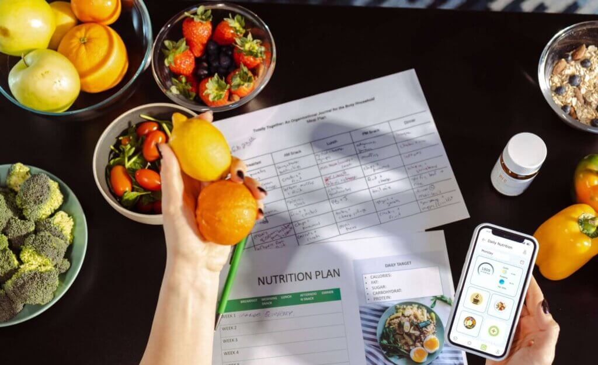
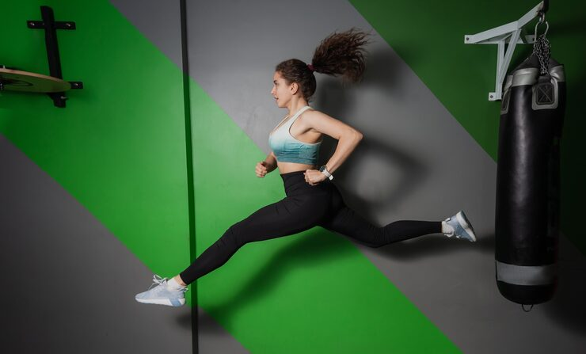

MloHealth engineers a healthier global future from African roots: data-backed clinical dietetics, elite sports nutrition, public wellness education and humanitarian impact under one roof.

Five pillars
From the precision of clinical dietetics to grassroots feeding programs: MloHealth has a door for everyone.
Licensed KNDI clinical dietetics for diabetes, hypertension, renal, oncology and metabolic conditions.
Explore →Performance programs for endurance, strength, hypertrophy and active lifestyle athletes.
Explore →Evidence-based articles, expert diet reviews and wellness toolkits in Swahili and English.
Explore →Seasonal Kenyan meal-prep guides, recipes and downloadable nutrition infographics.
Explore →Free clinical relief camps and feeding programs powered by every consult we deliver.
Explore →Clinical insights, sports-nutrition deep dives, wellness articles, recipes, and field reports.
Read blog →
Two syllables: Mlo Health. Punchy enough for the shaker bottle, scientific enough for the chart. Mlo is Swahili for “a meal” and our entire ecosystem is built around the plate.


Latest journal
Pillar 01 — Clinical Consultancy
Evidence-based medical nutrition therapy for diabetes, hypertension, renal, oncology, gastrointestinal, paediatric, and metabolic conditions. Every plan is built on your pathology, medication, and lifestyle.

Secure medical history, pathology uploads, and prescription tracking before your first session.
Telemedicine across East Africa; in-person in Nairobi by appointment.
Personalized therapy plans with weekly check-ins and clinician-grade progress tracking.
Continuous glucose review, insulin matching, and culturally adapted carb targets.
Sodium, potassium and phosphorus management aligned with your nephrologist or cardiologist.
Anti-cachexia protocols and recovery nutrition during and after treatment.
Pillar 02 — Sports Nutrition
Choose your performance optimization program. Macro plans engineered to your sport, training block, and biometrics; with shaker-bottle simplicity.

Personalized carb/protein/fat targets that adjust with your training load.
Designed to sync with your training data from common athletic wearables.
Evidence-graded recommendations on creatine, beta-alanine, electrolytes, and protein blends.
Marathon, trail, and middle-distance fueling with carb periodization and hydration calculators.
Strength training, rugby and combat sports — creatine timing, protein cycling and recovery stacks.
Body composition work: surplus engineering, micronutrient density, and sleep nutrition.
Weekend warriors and corporate athletes — sustainable fueling without the elite calorie burn.
Your body chooses where to deposit fat — but when cutting, it's a uniform affair. Low-intensity exercise on a calorie deficit, paired with high-fibre, high-protein meals, is what actually works. Joy breaks it all down in the journal.
Pillar 03 — Wellness
Evidence-based articles, expert diet reviews, and the everyday wellness journalism that makes science useful at the dinner table.

Microbiome, fermented foods, peptic ulcers, acid reflux, and fibre: the gut is the foundation of immunity.
Pregnancy, postpartum, and infant feeding handbooks in Swahili and English.
The gut-brain link, mood foods and clinically grounded sleep nutrition.
Sodium, fibre and the Kenyan plate — practical cardiovascular eating.
Sarcopenia, bone density and metabolic resilience after 50.
Coffee, tea, electrolytes — make hydration work for your day.
Wellness / Diet Reviews
Plain-English, evidence-based reviews of popular diets; adapted for African food culture and Kenyan kitchens.
Olive oil, legumes, fish, vegetables and whole grains. Strongest evidence base for cardiovascular and metabolic health.
Designed to lower blood pressure: fruits, vegetables, whole grains, low-fat dairy, low sodium.
Mostly plants, minimal animal products. Strong for weight management and longevity when planned well.
Time-restricted eating (16:8). Useful tool, not magic. Food quality still matters more than the clock.
Very high-fat, very low-carb. Therapeutic for epilepsy and select metabolic conditions; restrictive long-term.
Animal foods only. Lacks fibre, polyphenols and vitamin C. No long-term evidence base.
Reviews are educational only. Book a consult for a plan built around your medical history.
Pillar 04 — Meals & Preps
Downloadable Swahili and English infographics, weekly Kenyan meal-prep templates, and recipes engineered by our dietetics team.

Sukuma, ugali, githeri, fish, lentils — re-engineered for macro balance and glycemic control.
Every guide uses both languages so families can use them together.
Sunday-prep playbooks that save time, money, and willpower across the week.
Tiered ingredient lists — same recipe, three budget brackets.
Scaled for solo, couple and family-of-five households.
Diabetic, low-sodium, vegetarian and gluten-free swaps clearly labelled.
Pillar 05 — Charity
A share of every consult, program, and product MloHealth ships funds for free clinical relief camps and community feeding programs across Kenya.
Monthly camps in under-served counties: screenings, education, and direct meal support.
Antenatal and under-5 nutrition support targeting the critical first 1,000 days.
Annual reporting on funds raised, camps run, and people served.
Send Money
0703 612 691Joy Achieng · MloHealth
Email us for invoiced donations, wire details, or PayPal links.
Co-funded camps, employee wellness sponsorships and grant collaborations.
Journal
Clinical insights, sports-nutrition deep dives, wellness articles, recipes, field reports from Joy Achieng, and links to her LinkedIn publications.
Staff only: enter the admin password to publish.
About MloHealth
I am a passionate, KNDI-licensed nutritionist with nearly a decade of clinical and community nutrition experience dedicated to preventing lifestyle diseases before they start.
Mlo Health is built on a simple truth: nutrition is healthcare. Having stood on the frontlines of clinical care, I have shared intimate moments with individuals battling severe, preventable chronic illnesses: felt their pain, walked through their struggles, and witnessed the heavy toll that lifestyle diseases take on families.
This profound experience shifted my mission. I realized that treating sickness isn't enough; we must cultivate wellness. Today, I use my nine-plus years of expertise to empower communities, corporations, and individuals to take control of their health through proactive, evidence-based nutrition.
To engineer a healthier global future from African roots by delivering data-backed clinical dietary therapies, maximizing elite athletic performance, and eradicating community malnutrition through sustainable public health infrastructure and humanitarian partnerships.
To become the world's most trusted Afro-centric nutrition ecosystem, seamlessly bridging scientific medical precision with grassroots social impact: from Nairobi to the world.
What we do
At Mlo Health, we approach wellness from every angle. We bridge the gap between clinical science and practical lifestyle changes through a diverse range of services.
Tailored, one-on-one medical nutrition therapy to manage and reverse metabolic conditions, including diabetes, hypertension, and renal disease.
Stress-free, nutrient-dense meal strategies designed to fit your unique lifestyle, health goals, and budget.
Actionable fueling and recovery strategies for athletes looking to optimize performance and body composition.
High-impact workplace health initiatives, interactive workshops, and executive wellness coaching to fuel productivity.
Bringing diet-specific, healthy office meals directly to corporate settings — because performance starts at the plate.
Driving grassroots food security and public health interventions for vulnerable populations across Kenya.
Creating accessible digital health resources, guides, and workshops for the public in Swahili and English.
In a digital world crowded with fitness influencers and unverified diet trends, true health requires qualified expertise.
Licensed by the Kenya Nutritionists and Dieticians Institute (KNDI) — the gold standard for nutrition practice in Kenya.
Every meal plan, corporate program, and clinical consultation is backed by rigorous scientific research.
Close to 10 years of trusted hands-on practice spanning major clinical hospitals and grassroots community health projects.
Meet the founder

Joy leads MloHealth's clinical practice, builds the sports-nutrition programs, and writes the wellness journal. Whether you are an individual seeking customized meal prep, an athlete looking for a competitive edge, or a corporate leader ready to revolutionize workplace wellness, Joy is your partner in sustainable vitality.
Let's build a healthier community together.

Patient, athlete, public-health partner or donor — there's a door for you at MloHealth.
Contact
Tell us what you need. Whether a clinical consult, a sports program, a partnership, or a press request, we'll reply within one business day.
M-Pesa donations
Send Money to
0703 612 691Joy Achieng (MloHealth)
✓ Thanks, Joy will reply within one business day.
Please fill in all required fields.